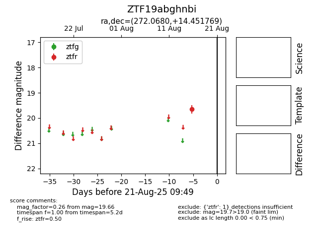

Target ZTF19abghnbi at 2025-08-21 09:49, see:
FINK: fink-portal.org/ZTF19abghnbi
Lasair: lasair-ztf.lsst.ac.uk/objects/ZTF19abghnbi
ALeRCE: alerce.online/object/ZTF19abghnbi
alt names
ZTF19abghnbi (ztf,alerce)
coordinates:
equatorial (ra, dec) = (272.0680,+14.45177)
galactic (l, b) = (41.2712,+15.97166)
photometry
last ztfr=19.66
1 ztfr detections
